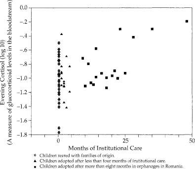
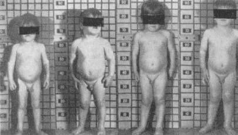
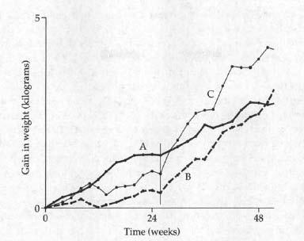
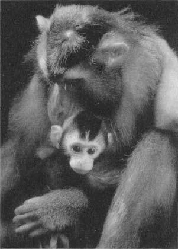
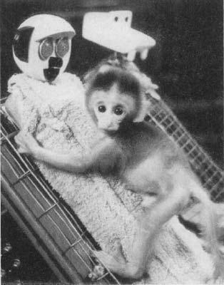

It still surprises me that organisms grow. Maybe I don’t believe in biology as much as I claim. Eating and digesting a meal seems very real. You put a massive amount of something or other in your mouth, and, as a result, all sorts of tangible things happen—your jaw gets tired, your stomach distends, eventually something comes out the other end. Growth seems pretty tangible, too. Long bones get longer, kids weigh more when you heft them.
It still surprises me that organisms grow. Maybe I don’t believe in biology as much as I claim. Eating and digesting a meal seems very real. You put a massive amount of something or other in your mouth, and, as a result, all sorts of tangible things happen—your jaw gets tired, your stomach distends, eventually something comes out the other end. Growth seems pretty tangible, too. Long bones get longer, kids weigh more when you heft them.
My difficulty is with the steps that connect digestion with growth. I know how it works; my university even allows me to teach impressionable students about it. But it just seems implausible. Someone ate a mountain of spaghetti, salad, garlic bread, and two slices of cake for dessert—and that has been transformed and is now partially inside this test tube of blood? And somehow it’s going to be reconstructed into bone? Just think, your femur is made up of tiny pieces of your mother’s chicken potpie that you ate throughout your youth. Ha! You see, you don’t really believe in the process either. Maybe we’re too primitive to comprehend the transmogrification of material.
How We Grow
Nevertheless, growth does occur as a result of eating. And in a kid, it’s not a trivial process. The brain gets bigger, the shape of the head changes. Cells divide, grow in size, and synthesize new proteins. Long bones lengthen as cartilaginous cells at the ends of bones migrate into the shaft and solidify into bone. Baby fat melts away and is replaced by muscle. The larynx thickens and the voice deepens, hair grows in all sorts of unlikely places on the body, breasts develop, testes enlarge.
From the standpoint of understanding the effects of stress on growth, the most important feature of the growth process is that, of course, growth doesn’t come cheap. Calcium must be obtained to build bones, amino acids are needed for all that protein synthesis, fatty acids build cell walls—and it’s glucose that pays for the building costs. Appetite soars, and nutrients pour in from the intestines. A large part of what various hormones do is to mobilize the energy and the material needed for all these civic expansion projects. Growth hormone dominates the process. Sometimes it works directly on cells in the body—for example, growth hormone helps to break down fat stores, flushing them into the circulation so they can be diverted to the growing cells. Alternatively, sometimes growth hormone must first trigger the release of another class of hormones called somatomedins, which actually do the job, such as promoting cell division. Thyroid hormone plays a role, promoting growth hormone release, making bones more responsive to somatomedins. Insulin does something similar as well. The reproductive hormones come into play around puberty. Estrogen promotes the growth of long bones, both by acting directly on bone and by increasing growth hormone secretion. Testosterone does similar things to long bones and, in addition, enhances muscle growth.
Adolescents stop growing when the ends of the long bones meet and begin to fuse, but for complex reasons, testosterone, by accelerating the growth of the ends of long bones, can actually speed the cessation of growth. Thus, pubescent boys given testosterone will, paradoxically, wind up having their adult stature blunted a bit. Conversely, boys castrated before puberty grow to be quite tall, with lanky bodies and particularly long limbs. Opera history buffs will recognize this morphology, as castrati were famed for this body shape.
It is time to look at how stress disrupts normal development. As we’ll see, this not only involves impairing skeletal growth (that is, how tall you grow to be), but also how stress early in life can alter your vulnerability to disease throughout your lifetime.
Now, before I launch into this, I have to issue a warning to anyone who is a parent, or who plans to be a parent, or who had parents. There’s nothing like parenthood to make you really neurotic, as you worry about the consequences of your every act, thought, or omission. I have young children, and here are some of the heinous things that my wife and I have done to irreparably harm them: there was the time we were desperate to placate them about something and allowed them to eat some sugar-bomb breakfast cereal we’d normally ban; then there was the loud concert we went to when our firstborn was a third-trimester fetus, causing him to kick throughout, no doubt in pained protest; and there was the time we messed up with our otherwise ceaseless vigilance and allowed ten seconds of a violent cartoon to show on the television while we fumbled with the Kumbaya-esque video we were attempting to insert. You only want perfection for the ones you love beyond words, so you get nutsy at times. This section will make you nutsier.
So keep this warning in mind, a point I will return to at the end.
Prenatal Stress
What is childhood about? It is a time when you make assessments about the nature of the world. For example, “If you let go of something, it falls down, not up.” Or, “If something is hidden underneath something else, it still exists.” Or, ideally, “Even if Mommy disappears for a while, she will come back because Mommy always comes back.”
Often, these assessments shape your view of the world forever. For example, as will be discussed in chapter 14, if you lose a parent to death while you are a child, your risk of major depression has increased for the rest of your life. I will suggest that this arises from having learned at a premature age a deep emotional lesson about the nature of life, namely, that this is a world in which awful things can happen over which you have no control.
It turns out that during development, beginning with fetal life, your body is also learning about the nature of the world and, metaphorically, making lifelong decisions about how to respond to the outside world. And if development involves certain types of stressors, some of these “decisions” cause a lifelong increase in the risk of certain diseases.
Consider a female who is pregnant during a famine. She’s not getting enough calories, nor is her fetus. It turns out that during the latter part of pregnancy, a fetus is “learning” about how plentiful food is in that outside world, and a famine winds up “teaching” it that, jeez, there’s not a whole lot of food out there, better store every smidgen of it. Something about the metabolism of that fetus shifts permanently, a feature called metabolic “imprinting” or “programming.” Forever after, that fetus will be particularly good at storing the food it consumes, at retaining every grain of precious salt from the diet. Forever after, that fetus develops what has been termed a “thrifty” metabolism.
And what are the consequences of that? Suddenly we find ourselves back in the middle of chapters 3 and 4. Everything else being equal throughout life, even late in life, that organism is more at risk for hypertension, obesity, adult-onset diabetes, and cardiovascular disease.
Remarkably, things work precisely this way in rats, pigs, and sheep. And humans as well. The most dramatic and most cited example concerns the Dutch Hunger Winter at the end of World War II. The occupying Nazis were being pushed back on all fronts, the Dutch were trying to aid the Allies coming to liberate them, and, as punishment, the Nazis cut off all food transport. For a demarcated season, the Dutch starved. People consumed less than 1,000 calories a day, were reduced to eating tulip bulbs, and 16,000 people starved to death. Fetuases, going about their lifelong metabolic programming, learned some severe lessons about food availability during that winter of starvation. The result is a cohort of people with thrifty metabolisms and increased risks of Metabolic syndrome a half-century later. Seemingly, different aspects of metabolism and physiology get programmed at different points of fetal development. If you were a first-trimester fetus during the famine, that programs you for a greater risk of heart disease, obesity, and an unhealthy cholesterol profile, whereas if you were a second- or third-trimester fetus, that programs you for a greater diabetes risk.
The key to this phenomenon seems to be not only that you were undernourished as a fetus, but that after birth you had plenty of food and were able to recover from the deprivation quickly. Thus, from early in childhood, you not only were highly efficient at storing nutrients, but had access to plentiful nutrients.*
So avoid starving a fetus while you’re pregnant. But this phenomenon also applies to less dramatic situations. Within the normal range of birth weights, the lower the weight of a baby (when adjusted for body length), the greater the risk of those Metabolic syndrome problems in adulthood. Even after you control for adult body weight, low birth weight still predicts an increased risk of diabetes and hypertension.
These are big effects. When you compare those who were heaviest versus lightest at birth, you see an approximate eight-fold difference in the risk of pre-diabetes, and about an eighteen-fold difference in the risk of Metabolic syndrome. Among both men and women, compare those whose birth weights were in the lowest 25 percent versus those in the highest 25 percent, and the former have a 50 percent higher rate of death from heart disease.
This relationship between fetal nutritional events and lifelong risks of metabolic and cardiovascular disease was first described by the epidemiologist David Barker of Southampton Hospital in England, and now goes by the name Fetal Origins of Adult Disease (FOAD). And we’re not done with this yet.
Starvation is clearly a stressor, raising the question of whether the metabolic programming occurs because of the nutritional consequences of the shortage of calories, and /or because of the stressfulness of the shortage of calories. Asked another way, do non-nutritional stressors during pregnancy also induce FOAD-like effects? The answer is, yes.
An extensive literature, stretching back decades, shows that stressing a female rat in any number of ways while she is pregnant will cause lifelong changes in the physiology of her offspring. Predictably, one set of changes involves glucocorticoid secretion. Once again, think of the fetal body “learning” about the outside world, this time along the lines of, “How stressful is it out there?” Fetuses can monitor signals of stress from the mother, insofar as glucocorticoids readily pass through to the fetal circulation, and lots of glucocorticoids “teach” the fetus that it is indeed a stressful world out there. The result? Be prepared for that stressful world: tend toward secreting excessive amounts of glucocorticoids. Prenatally stressed rats grow into adults with elevated glucocorticoid levels—depending on the study, elevated basal levels, a larger stress-response, and/or a sluggish recovery from the stress-response. The lifelong programming seems to be due to a permanent decrease in the number of receptors for glucocorticoids in one part of the brain. The brain region is involved in turning off this stress-response by inhibiting CRH release. Fewer glucocorticoid receptors there mean less sensitivity to the hormone’s signal, which means less effective reining in of subsequent glucocorticoid secretion. The result is a lifelong tendency toward elevated levels.
Is it the glucocorticoid secretion by the stressed pregnant female that gives rise to these permanent changes in the offspring? Seemingly yes—the effect can be replicated in a number of species, including nonhuman primates, by injecting the pregnant female with high glucocorticoid levels, instead of stressing her.
A smaller but fairly solid literature shows that prenatal stress programs humans for higher glucocorticoid secretion in adulthood as well. In these studies, low birth weight (corrected for body length) is used as a surrogate marker for stressors during fetal life, and the lower the birth weight, the higher the basal glucocorticoid levels in adults ranging from age twenty to seventy; this relationship becomes even more pronounced when low birth weight is coupled with premature birth.*
The excessive glucocorticoid exposure of a stressful fetal life seems to contribute to the lifelong increase in the risk of Metabolic syndrome as well. As evidence, if you expose a fetal rat, sheep, or nonhuman primate to lots of synthetic glucocorticoids during late gestational life (by injecting the mother with them), that fetus will be more at risk for the symptoms of Metabolic syndrome as an adult. How does this arise? A plausible sequence is that the prenatal exposure to high glucocorticoid levels leads to the elevated glucocorticoid levels in adulthood, which increases the risk of Metabolic syndrome. Those readers who have memorized the book so far will have no trouble recalling exactly how an excess of glucocorticoids in adulthood can increase the odds of obesity, insulin-resistant diabetes, and hypertension. Despite those potential links, the elevated glucocorticoid levels in adulthood are probably only one of the routes linking prenatal stress with the adult Metabolic syndrome.
So now we have hypertension, diabetes, cardiovascular disease, obesity, and glucocorticoid excess in this picture. Let’s make it worse. How about the reproductive system? An extensive literature shows that if you stress pregnant rats, you “demasculinize” the male fetuses. They are less sexually active as adults, and have less developed genitals. As we will see in the next chapter, stress decreases testosterone secretion, and it seems to do so in male fetuses as well. Furthermore, glucocorticoids and testosterone have similar chemical structures (they are both “steroid” hormones), and a lot of glucocorticoids in a fetus can begin to gum up and block receptors for testosterone, making it impossible for the testosterone to have its effects.
More FOADish problems. Seriously stress a pregnant rat and her offspring will grow up to be anxious. Now, how do you tell if a rat is anxious? You put it in a new (and thus, by definition, scary) environment; how long does it take for it to explore? Or take advantage of the fact that rats, being nocturnal, don’t like bright lights. Take a hungry rat and put some food in the middle of a brightly lit cage; how long until the rat goes for the food? How readily can the rat learn in a novel setting, or socially interact with new rats? How much does the rat defecate in a novel setting?* Prenatally stressed rats, as adults, freeze up when around bright lights, can’t learn in novel settings, defecate like crazy. Sad. As we will see in chapter 15, anxiety revolves around a part of the brain called the amygdala, and prenatal stress programs the amygdala into a lifelong profile that has anxiety written all over it. The amygdala winds up with more receptors for (that is, more sensitivity to) glucocorticoids, more of a neurotransmitter that mediates anxiety, and fewer receptors for a brain chemical that reduces anxiety.* Does prenatal stress in humans make for anxious adults? It’s difficult to study this in humans, in that it is hard to find mothers who are anxious during pregnancy, or anxious while their child is growing up, but not both. So there’s not a huge amount of evidence for this happening in humans.
Finally, chapter 10 will review how an excess of stress can have bad effects on the brain, particularly in the developing brain. Prenatally stressed rodents grow up to have fewer connections between the neurons in a key area of the brain involved in learning and memory, and have more impairments of memory in old age, while prenatally stressed nonhuman primates have memory problems and form fewer neurons as well. The human studies have been very hard to carry out for reasons similar to that of those examining whether prenatal stress increases the risk of anxiety. With that caveat, a number of studies have shown that such stress results in children born with a smaller head circumference (which certainly fits in with the picture of being underweight in general). However, it’s not clear whether head circumference at birth predicts how many academic degrees the kid is going to have after her name thirty years later.
One final piece of the FOAD story is so intrinsically fascinating that it made me stop thinking like a worried parent for a few minutes and instead I just marveled at biology.
Suppose you have a fetus exposed to lots of stress, say, malnutrition, and who thus programs a thrifty metabolism. Later, as an adult, she gets pregnant. She consumes normal amounts of food. Because she has that thrifty metabolism, is so good at storing away nutrients in case that fetal famine ever comes back again, her body grabs a disproportionate share of the nutrients in her bloodstream for herself. In other words, amid consuming an average amount of food, her fetus gets a less than average share of it, producing mild malnutrition. And thus programs a milder version of a thrifty metabolism. And when that fetus eventually becomes pregnant….
In other words, these FOADish tendencies can be transmitted across generations, without the benefit of genes. It’s not due to shared genes, but to shared environment, namely, the intimately shared blood supply during gestation.
Amazing. This is precisely what is seen in the Dutch Hunger Winter population, in that their grandchildren are born with lower than expected birth weights. This is seen in other realms as well. Pick some rats at random and feed them on a diet that will make them become obese at the time of pregnancy. As a result, their offspring, despite being fed a normal diet, have an increased risk of obesity. As wall their grandkids. Similarly, in humans, having insulin-resistant diabetes while pregnant increases the risk of the disorder in your offspring, after controlling for weight. Wait a second—going through a famine means less nutrients in the bloodstream, while having insulin-resistant diabetes means more. How can they produce the same thrifty metabolism in the fetus? Remember, you have elevated levels of glucose in the bloodstream in the case of diabetes because you can’t store the stuff. Recall a one-sentence factoid from chapter 4—when overstuffed fat cells begin to become insulin-resistant, they release hormones that urge other fat cells and muscle to do the same. And those hormones get into the fetal circulation. So you have Mom, who is insulin-resistant because she has too much energy stored away, releasing hormones that make the normal-weight fetus bad at energy storage as well…and the fetus winds up underweight and with a thrifty metabolic view of the world.
So expose a fetus to lots of glucocorticoids and you are increasing its risk for obesity, hypertension, cardiovascular disease, insulin-resistant diabetes, maybe reproductive impairments, maybe anxiety, and impaired brain development. And maybe even setting up that fetus’s eventual offspring for the same. Aren’t you sorry now that the two of you had that argument over whether to videotape the delivery? Now on to the next realm of worries.
Postnatal Stress
The obvious question to begin this section is, does postnatal stress have lifelong adverse effects on development as well?
Of course it can. To begin, what’s the most stressful thing that could happen to an infant rat? Being deprived of its mother (while still receiving adequate nutrition). Work done by Paul Plotsky at Emory University shows that maternal deprivation causes similar consequences in a rat as prenatal stress: increased levels of glucocorticoids during stress and an impaired recovery at the end of stress. More anxiety, and the same sorts of changes in the amygdala as were seen in prenatally stressed adults. And impaired development of a part of the brain relevant to learning and memory. Separate an infant rhesus monkey from its mother and it grows up to have elevated glucocorticoid levels as well.
How about something more subtle? What if your rat mom is around but is simply inattentive? Michael Meaney of McGill University has looked at the lifelong consequences for rats of having had a highly attentive or highly inattentive mother. What counts as attentiveness? Grooming and licking. Infants whose mothers groomed and licked the least produced kids who were milder versions of rats who were maternally deprived as infants, with elevated glucocorticoid levels.*

What are the consequences of childhood stress for disease vulnerability during adulthood in humans? This has been studied only minimally, which is not surprising, given how difficult such studies are. A number of studies, mentioned earlier, show that loss of a parent to death during childhood increases the lifelong risk of depression. Another, discussed in chapter 5, shows that early trauma increases the risk of irritable bowel syndrome in adulthood, and similar animal studies show that early stress produces large intestines that contract to abnormal extents in response to stress.
Though the subject is still poorly studied, childhood stress may produce the building blocks for the sort of adult diseases we’ve been considering. For example, when you examine children who had been adopted more than a year before from Romanian orphanages, the longer the child spent in the orphanage, the higher the resting glucocorticoid levels.* Similarly, children who have been abused have elevated glucocorticoid levels, and decreased size and activity in the most highly evolved part of the brain, the frontal cortex.
and Stress Dwarfism
How about the effects of stress on how tall you grow (often referred to as skeletal growth)? Skeletal growth is great when you are a ten-year-old lying in bed at night with a full belly. However, it’s the usual scenario of it not making a whole lot of sense when you’re sprinting from a lion. If there is no time to derive any advantages from digesting your meal at that point, there certainly isn’t time to get any benefit from growth.
To understand the process by which stress inhibits skeletal growth, it helps to begin with extreme cases. A child of, say, eight years is brought to a doctor because she has stopped growing. There are none of the typical problems—the kid is getting enough food, there is no apparent disease, she has no intestinal parasites that compete for nutrients. No one can identify an organic cause of her problem; yet she doesn’t grow. In many such cases, there turns out to be something dreadfully stressful in her life—emotional neglect or psychological abuse. In such circumstances, the syndrome is called stress dwarfism, or psychosocial or psychogenic dwarfism.*
A question now typically comes to mind among people who are below average height. If you are short, yet didn’t have any obvious chronic diseases as a kid and can recall a dreadful period in your childhood, are you a victim of mild stress dwarfism? Suppose one of your parents had a job necessitating frequent moves, and every year or two throughout childhood you were uprooted, forced to leave your friends, moved off to a strange school. Is this the sort of situation associated with psychogenic dwarfism? Definitely not. How about something more severe? What about an acrimonious divorce? Stress dwarfism? Unlikely.
The syndrome is extremely rare. These are the kids who are incessantly harassed and psychologically terrorized by the crazy stepfather. These are the kids who, when the police and the social workers break down the door, are discovered to have been locked in a closet for extended periods, fed a tray of food slipped under the door. These are the products of vast, grotesque psychopathology. And they appear in every endocrinology textbook, standing nude in front of a growth chart. Stunted little kids, years behind their expected height, years behind in mental development, bruised, with distorted, flinching postures, haunted, slack facial expressions, eyes masked by the obligatory rectangles that accompany all naked people in medical texts. And all with stories to take your breath away and make you wonder at the potential sickness of the human mind.
Invariably, on the same page in the text is a surprising second photo—the same child a few years later, after having been placed in a different environment (or, as one pediatric endocrinologist termed it, having undergone a “parentectomy”). No bruises, maybe a tentative smile. And a lot taller. So long as the stressor is removed before the child is far into puberty (when the ends of the long bones fuse together and growth ceases), there is the potential for some degree of “catch-up” growth (although shortness of stature and some degree of stunting of personality and intellect usually persist into adulthood).
Despite the clinical rarity of stress dwarfism, instances pop up throughout history. One possible case arose during the thirteenth century as the result of an experiment by that noted endocrinologist, King Frederick II of Sicily. It seems that his court was engrossed in philosophic disputation over the natural language of humans. In an attempt to resolve the question, Frederick (who was apparently betting on Hebrew, Greek, or Latin) came up with a surprisingly sophisticated idea for an experiment. He commandeered a bunch of infants and had each one reared in a room of its own. Every day someone would bring the child food, fresh blankets, and clean clothes, all of the best quality. But they wouldn’t stay and play with the infant, or hold it—too much of a chance that the person would speak in the child’s presence. The infants would be reared without human language, and everyone would get to see what was actually the natural language of humans.
Of course, the kids did not spontaneously burst out of the door one day reciting poetry in Italian or singing opera. The kids didn’t burst out of the door at all. None of them survived. The lesson is obvious to us now—optimal growth and development do not merely depend on being fed the right number of calories and being kept warm. Frederick “laboured in vain, for the children could not live without clappings of hands and gestures and gladness of countenance and blandishments,” reported the contemporary historian Salimbene. It seems quite plausible that these kids, all healthy and well fed, died of a nonorganic failure to thrive.*

A child suffering from stress dwarfism: changes in appearance during hospitalization (left to right).
Another study that winds up in half the textbooks makes the same point, if more subtly. The subjects of the “experiment” were children reared in two different orphanages in Germany after World War II. Both orphanages were run by the government; thus there were important controls in place—the kids in both had the same general diet, the same frequency of doctors’ visits, and so on. The main identifiable difference in their care was the two women who ran the orphanages. The scientists even checked them, and their description sounds like a parable. In one orphanage was Fräulein Grun, the warm, nurturing mother figure who played with the children, comforted them, and spent all day singing and laughing. In the other was Fräulein Schwarz, a woman who was clearly in the wrong profession. She discharged her professional obligations, but minimized her contact with the children; she frequently criticized and berated them, typically among their assembled peers. The growth rates at the two orphanages were entirely different. Fräulein Schwarz’s kids grew in height and weight at a slower pace than the kids in the other orphanage. Then, in an elaboration that couldn’t have been more useful if it had been planned by a scientist, Fräulein Grun moved on to greener pastures and, for some bureaucratic reason, Fräulein Schwarz was transferred to the other orphanage. Growth rates in her former orphanage promptly increased; those in her new one decreased.

Growth rates in the two German orphanages. During the first 26 weeks of the study, growth rates in Orphanage A, under the administration of Fräulein Grun, were much greater than those in Orphanage B, with the stern Fräulein Schwarz. At 26 weeks (vertical line), Fräulein Grun left Orphanage A and was replaced by Fräulein Schwarz. The rate of growth in that orphanage promptly slowed; growth in Orphanage B, now minus the stern Fräulein Schwarz, accelerated and soon surpassed that of Orphanage A. A fascinating elaboration emerges from the fact that Schwarz was not completely heartless, but had a subset of children who were her favorites (Curve C), whom she had transferred with her.
A final and truly disturbing example comes to mind. If you ever find yourself reading chapter after chapter about growth endocrinology (which I don’t recommend), you will note an occasional odd reference to Peter Pan—perhaps a quotation from the play, or a snide comment about Tinker Bell. I’d long noted the phenomenon and finally, in a chapter in one textbook, I found the explanation for it.
The chapter reviewed the regulation of growth in children and the capacity for severe psychological stress to trigger psychogenic dwarfism. It gave an example that occurred in a British Victorian family. A son, age thirteen, the beloved favorite of the mother, is killed in an accident. The mother, despairing and bereaved, takes to her bed in grief for years afterward, utterly ignoring her other, six-year-old son. Horrible scenes ensue. For example, the boy, on one occasion, enters her darkened room; the mother, in her delusional state, briefly believes it is the dead son—“David, is that you? Could that be you?”—before realizing: “Oh, it is only you.” Growing up, being “only you.” On the rare instances when the mother interacts with the younger son, she repeatedly expresses the same obsessive thought: the only solace she feels is that David died when he was still perfect, still a boy, never to be ruined by growing up and growing away from his mother.
The younger boy, ignored (the stern, distant father seemed to have been irrelevant to the family dynamics), seizes upon this idea; by remaining a boy forever, by not growing up, he will at least have some chance of pleasing his mother, winning her love. Although there is no evidence of disease or malnutrition in his well-to-do family, he ceases growing. As an adult, he is just barely five feet in height, and his marriage is unconsummated.
And then the chapter informs us that the boy became the author of the much-beloved children’s classic—Peter Pan. J. M. Barrie’s writings are filled with children who didn’t grow up, who were fortunate enough to die in childhood, who came back as ghosts to visit their mothers.
The Mechanisms Underlying
Stress Dwarfism
Stress dwarfism involves extremely low growth hormone levels in the circulation. The sensitivity of growth hormone to psychological state has rarely been shown as clearly as in a paper that followed a single child with stress dwarfism. When brought to the hospital, he was assigned to a nurse who spent a great deal of time with him and to whom he became very attached. Row A in the table below shows his physiological profile upon entering the hospital: extremely low growth hormone levels and a low rate of growth. Row B shows his profile a few months later, while still in the hospital: growth hormone levels have more than doubled (without his having received any synthetic hormones), and the growth rate has more than tripled. The stress dwarfism is not a problem of insufficient food—the boy was eating more at the time he entered the hospital than a few months later, when his growth resumed.
A Demonstration of the Sensitivity of Growth to Emotional State
|
Condition |
Growth hormone |
Growth |
Food intake |
|
A. Entry into hospital |
5.9 |
0.5 |
1663 |
|
B. 100 days later |
13.0 |
1.7 |
1514 |
|
C. Favorite nurse on vacation |
6.9 |
0.6 |
1504 |
|
D. Nurse returns |
15.0 |
1.5 |
1521 |
Source: From Saenger and colleagues, 1977. Growth hormone is measured in nanograms of the hormone per milliliter of blood following insulin stimulation; growth is expressed as centimeters per 20 days. Food intake is expressed in calories consumed per day.
Row C profiles the period when the nurse went on a three-week vacation. Despite the same food intake, growth hormone levels and growth plummeted. Finally, Row D shows the boy’s profile after the nurse returned from vacation. This is extraordinary. To take a concrete, nuts and bolts feature of growth, the rate at which this child was depositing calcium in his long bones could be successfully predicted by his proximity to a loved one. You can’t ask for a clearer demonstration that what is going on in our heads influences every cell in our bodies.
Why do growth hormone levels decline in these kids? Growth hormone is secreted by the pituitary gland, which in turn is regulated by the hypothalamus in the brain (see chapter 2). The hypothalamus controls the release of growth hormone through the secretion of a stimulatory hormone and an inhibitory one, and it looks as if stress dwarfism involves too much release of the inhibitory hormone. Stress-induced overactivity of the sympathetic nervous system may play some role in this. Furthermore, the body becomes less responsive to what little growth hormone is actually secreted. Therefore, even administering synthetic growth hormone doesn’t necessarily solve the growth problem. Some stress dwarfism kids have elevated glucocorticoid levels, and the hormone blunts growth hormone release as well as responsiveness of the body to growth hormone.
Kids with stress dwarfism also have gastrointestinal problems, in that they’re impaired at absorbing nutrients from their intestines. This is probably because of the enhanced activity of their sympathetic nervous systems. As discussed in chapter 5, this will halt the release of various digestive enzymes, stop the muscular contractions of the stomach and intestinal walls, and block nutrient absorption.
This tells us something about which stress hormones shut down growth. But what is it about being reared under pathological conditions that causes a failure of skeletal growth? Cynthia Kuhn and Saul Schanberg of Duke University and, in separate studies, Myron Hofer of the New York State Psychiatric Institute, have examined that question in infant rats separated from their mothers. Is it the smell of Mom that would normally stimulate growth? Is it something in her milk? Do the rats get chilly without her? Is it the rat lullabies that she sings? You can imagine the various ways scientists test for these possibilities—playing recordings of Mom’s vocalizations, pumping her odor into the cage, seeing what substitutes for the real thing.
It turns out to be touch, and it has to be active touching. Separate a baby rat from its mother and its growth hormone levels plummet. Allow it contact with its mother while she is anesthetized, and growth hormone is still low. Mimic active licking by the mother by stroking the rat pup in the proper pattern, and growth normalizes. In a similar set of findings, other investigators have observed that handling neonatal rats causes them to grow faster and larger.
The same seems to apply in humans, as demonstrated in a classic study. Tiffany Field of the University of Miami School of Medicine, along with Schanberg, Kuhn, and others, performed an incredibly simple experiment that was inspired both by the rat research and by the history of the dismal mortality rates in orphanages and pediatric wards, as discussed earlier. Studying premature infants in neonatology wards, they noted that the premature kids, while pampered and fretted over and maintained in near-sterile conditions, were hardly ever touched. So Field and crew went in and started touching them: fifteen-minute periods, three times a day, stroking their bodies, moving their limbs. It worked wonders. The kids grew nearly 50 percent faster, were more active and alert, matured faster behaviorally, and were released from the hospital nearly a week earlier than the premature infants who weren’t touched. Months later, they were still doing better than infants who hadn’t been touched. If this were done in every neonatology ward, this would not only make for a lot more healthy infants, but would save approximately a billion dollars annually. It’s rare that the highest technology of medical instrumentation—MRI machines, artificial organs, pacemakers—has the potential for as much impact as this simple intervention.

Pigtailed macaque mother and infant.
Touch is one of the central experiences of an infant. We readily think of stressors as consisting of various unpleasant things that can be done to an organism. Sometimes a stressor can be the failure to provide something essential, and the absence of touch is seemingly one of the most marked developmental stressors that we can suffer.
Secretion in Humans
The pattern of growth hormone secretion during stress differs in humans from rodents, and the implications can be fascinating. But the subject is a tough one, not meant for the fainthearted. So feel free to go to the bathroom now and come back at the next commercial break.
When a rat is first stressed, growth hormone levels in the circulation decline almost immediately. If the stressor continues, growth hormone levels remain depressed. And as we have seen, in humans major and prolonged stressors cause a decrease in growth hormone levels as well. The weird thing is that during the period immediately following the onset of stress, growth hormone levels actually go up in humans and some other species. In these species, in other words, short-term stress actually stimulates growth hormone secretion for a time.
Why? As was mentioned, growth hormone has two classes of effects. In the first, it stimulates somatomedins to stimulate bone growth and cell division. This is the growing part of the story. But in addition, growth hormone works directly on fat cells, breaking down fat stores and flushing them into the circulation. This is the energy for the growth. In effect, growth hormone not only runs the construction site for the new building, but arranges financing for the work as well.
Now that business about breaking down stored energy and flushing it into the circulation should sound familiar—that’s precisely what glucocorticoids, epinephrine, norepinephrine, and glucagon are doing during that sprint from the lion. So those direct growth hormone actions are similar to the energy mobilization that occurs during stress, while the somatomedin-mediated growth hormone actions are not what you want to be doing. During stress, therefore, it is adaptive to secrete growth hormone insofar as it helps to mobilize energy, but a bad move to secrete growth hormone insofar as it stimulates an expensive, long-term project like growth.
As noted, during stress, somatomedin secretion is inhibited, as is the sensitivity of the body to that hormone. This is perfect—you secrete growth hormone during stress and still get its energy-mobilizing effects, while blocking its more explicit growth-promoting effects. To extend the metaphor used earlier, growth hormone has just taken out cash from the bank, aiming to fund the next six months of construction; instead, the cash is used to solve the body’s immediate emergency.
Given this clever solution—spare the growth hormone, block the somatomedins—why should growth hormone levels decline at all during stress (whether immediately, as in the rat, or after a while, as in humans)? It is probably because the system does not work perfectly—somatomedin action is not completely shut down during stress. Therefore, the energy-mobilizing effects of growth hormone might still be used for growth. Perhaps the timing of the decline of growth hormone levels in each species is a compromise between the trait triggered by the hormone that is good news during stress and the trait that is undesirable.
What impresses me is how careful and calculating the body has to be during stress in order to coordinate hormonal activities just right. It must perfectly balance the costs and benefits, knowing exactly when to stop secreting the hormone. If the body miscalculates in one direction and growth hormone secretion is blocked too early, there is relatively less mobilization of energy for dealing with the stressor. If it miscalculates in the other direction and growth hormone secretion goes on too long, stress may actually enhance growth. One oft-quoted study suggests that the second type of error occurs during some stressors.
In the early 1960s, Thomas Landauer of Dartmouth and John Whiting of Harvard methodically studied the rites of passages found in various non-Western societies around the world; they wanted to know whether the stressfulness of the ritual was related to how tall the kids wound up being as adults. Landauer and Whiting classified cultures according to whether and when they subjected their children to physically stressful development rites. Stressful rites included piercing the nose, lips, or ears; circumcision, inoculation, scarification, or cauterization; stretching or binding of limbs, or shaping the head; exposure to hot baths, fire, or intense sunlight; exposure to cold baths, snow, or cold air; emetics, irritants, and enemas; rubbing with sand, or scraping with a shell or other sharp object. (And you thought having to play the piano at age ten for your grandmother’s friends was a stressful rite of passage.)
Reflecting the anthropological tunnel vision of the time, Landauer and Whiting only studied males. They examined eighty cultures around the world and carefully controlled for a potential problem with the data—they collected examples from cultures from the same gene pools, with and without those stressful rituals. For example, they compared the West African tribes of the Yoruba (stressful rituals) and Ashanti (nonstressful), and similarly matched Native American tribes. With this approach, they attempted to control for genetic contributions to stature (as well as nutrition, since related ethnic groups were likely to have similar diets) and to examine cultural differences instead.
Given the effects of stress on growth, it was not surprising that among cultures where kids of ages six to fifteen went through stressful maturational rituals, growth was inhibited (relative to cultures without such rituals, the difference was about 1.5 inches). Surprisingly, going through such rituals at ages two to six had no effect on growth. And most surprising, in cultures in which those rituals took place with kids under two years of age, growth was stimulated—adults were about 2.5 inches taller than in cultures without stressful rituals.
There are some possible confounds that could explain the results. One is fairly silly—maybe tall tribes like to put their young children through stressful rituals. One is more plausible—maybe putting very young children through these stressful rituals kills a certain percentage of them, and what doesn’t kill you makes you stronger and taller. Landauer and Whiting noted that possibility and could not rule it out. In addition, even though they attempted to pair similar groups, there may have been differences other than just the stressfulness of the rites of passage—perhaps in diet or child-rearing practices. Not surprisingly, no one has ever measured levels of growth hormone or somatomedins, in, say, Shilluk or Hausa kids while they are undergoing some grueling ritual, so there is no direct endocrine evidence that such stressors actually stimulate growth hormone secretion in a way that increases growth. Despite these problems, these cross-cultural studies have been interpreted by many biological anthropologists as evidence that some types of stressors in humans can actually stimulate growth, amid the broader literature showing the growth-suppressing effects of stress.
Enough Already
So there’s a whole bunch of ways that prenatal or early childhood stress can have bad and long-term consequences. This can be anxiety provoking; it gets me into a storm of parental agitation just to write about this. Let’s figure out what’s worrisome and what’s not.
First, can fetal or childhood exposure to synthetic glucocorticoids have lifelong, adverse effects? Glucocorticoids (such as hydrocortisone) are prescribed in vast amounts, because of their immunosuppressive or anti-inflammatory effects. During pregnancy, they are administered to women with certain endocrine disorders or who are at risk for delivering preterm. Heavy administration of them during pregnancy has been reported to result in children with smaller head circumferences, emotional and behavioral problems in childhood, and slowing of some developmental landmarks. Are these effects lifelong? No one knows. At this point, the experts have weighed in emphatically stating that a single round of glucocorticoids during either fetal or postnatal life has no adverse effects, though there is potential for problems with heavy use. But heavy doses of glucocorticoids are not administered unless there’s a serious illness going on, so the most prudent advice is to minimize their use clinically but to recognize that the alternative, the disease that prompted the treatment in the first place, is most probably worse.
What about prenatal or postnatal stress? Does every little hiccup of stress leave an adverse scar forever after, unto multiple generations? Many times, some relationship in biology may apply to extreme situations—massive trauma, a whole winter’s famine, and so on—but not to more everyday ones. Unfortunately, even the normal range of birth weights predicts adult glucocorticoid levels and the risk of Metabolic syndrome. So these appear not to be phenomena only of the extremes.
Next important question: How big are the effects? We’ve seen evidence that increasing amounts of fetal stress, over the normal range, predict increasing risk of Metabolic syndrome long afterward. That statement may be true and describes one of two very different scenarios. For example, it could be that the lowest levels of fetal stress result in a 1 percent risk of Metabolic syndrome, and each increase in stress exposure increases the risk until an exposure to a maximal fetal stress results in a 99 percent chance. Or the least fetal stress could result in a 1 percent risk, and each increase in stress exposure increases the risk until exposure to maximal fetal stress results in a 2 percent risk. In both cases, the endpoint is sensitive to small increments in the amount of stress, but the power of fetal stress to increase disease risk is vastly greater in the first scenario. As we will see in more detail in later chapters, early stress and trauma seem to have a tremendous power in increasing the risk of various psychiatric disorders many years later. Some critics of the FOAD literature seem to be of the opinion that it constitutes cool biology of the “Gee whiz, isn’t nature amazing” variety, but is not a major source of worry. However, the risks of some of these adult diseases vary manyfold as a function of birth weight—so these strike me as big effects.
Next question: Regardless of how powerful these effects are, how inevitable are they? Lose it once in a crazed, sleepless moment at two in the morning and yell at your colicky infant and is that it, have you just guaranteed more clogging of her arteries in 2060? Not remotely. As discussed, stress dwarfism is reversible with a different environment. Studies have shown that the lifelong changes in glucocorticoid levels in prenatally stressed rats can be prevented with particular mothering styles postnatally. Much of preventative medicine is a demonstration that vast numbers of adverse health situations can be reversed—in fact, that is a premise of this book.
The Cornell anthropologist Merideth Small has written a wonderfully un-neurotic book, Our Babies, Ourselves, which looks at child-rearing practices across the planet. In a particular culture, how often is a child typically held by parents, by non-parents? Do babies sleep alone ever and, if so, starting at what age? What is the average length of time that a child cries in a particular culture before she is picked up and comforted?
In measure after measure, westernized societies and, in particular, the United States, come out at the extreme in these cross-cultural measures, with our emphasis on individuality, independence, and self-reliance. This is our world of both parents working outside the home, of single-parent households, of day care and latchkey kids. There is little evidence that any of these childhood experiences leave indelible biological scars, in contrast to the results of horrific childhood trauma. But whatever style of child-rearing is practiced, it will have its consequences. Small makes a profound point. You begin by reading her book assuming it is going to be an assortment box of prescriptions, that at the end, you’ll emerge with a perfect combo for your kids, a mixture of the Kwakiutl Baby Diet, the Trobriand Sleeping Program, and the Ituri Pygmy Infant Aerobics Plan. But, Small emphasizes, there is no perfect, “natural” program. Societies raise their children so that they grow into adults who behave in a way valued by that society. As Harry Chapin sang in “Cat’s in the Cradle,” that ode to baby boomer remorse, “My boy was just like me.”
Growth and
Growth Hormone in Adults
Personally I don’t grow much anymore, except wider. According to the textbooks, another half-dozen Groundhog Days or so and I’m going to start shrinking. Yet I, like other adults, still secrete growth hormone into my circulation (although much less frequently than when I was an adolescent). What good is it in an adult?
Like the Red Queen in Alice in Wonderland, the bodies of adults have to work harder and harder just to keep standing in the same place. Once the growth period of youth is finished and the edifice is complete, the hormones of growth mostly work at rebuilding and remodeling—shoring up the sagging foundation, plastering the cracks that appear here and there.
Much of this repair work takes place in bone. Most of us probably view our bones as pretty boring and phlegmatic—they just sit there, inert. In reality, they are dynamic outposts of activity. They are filled with blood vessels, with little fluid-filled canals, with all sorts of cell types that are actively growing and dividing. New bone is constantly being formed, in much the same way as in a teenager. Old bone is being broken down, disintegrated by ravenous enzymes (a process called resorption). New calcium is shuttled in from the bloodstream; old calcium is flushed away. Growth hormone, somatomedins, parathyroid hormone, and vitamin D stand around in hard hats, supervising the project.
Why all the tumult? Some of this bustle is because bones serve as the Federal Reserve for the body’s calcium, constantly giving and collecting loans of calcium to and from other organs. And part is for the sake of bone itself, allowing it to gradually rebuild and change its shape in response to need. How else do cowboys’ bow-legged legs get bowed from too much time on a horse? The process has to be kept well balanced. If the bones sequester too much of the body’s calcium, much of the rest of the body shuts down; if the bones dump too much of their calcium into the bloodstream, they become fragile and prone to fracture, and that excess circulating calcium can start forming calcified kidney stones.
Predictably, the hormones of stress wreak havoc with the trafficking of calcium, biasing bone toward disintegration, rather than growth. The main culprits are glucocorticoids. They inhibit the growth of new bone by disrupting the division of the bone-precursor cells in the ends of bones. Furthermore, they reduce the calcium supply to bone. Glucocorticoids block the uptake of dietary calcium in the intestines (uptake normally stimulated by vitamin D), increase the excretion of calcium by the kidney, and accelerate the resorption of bone.
If you secrete excessive amounts of glucocorticoids, this increases the risk that your bones will eventually give you problems. This is seen in people with Cushing’s syndrome (in which glucocorticoids are secreted at immensely high levels because of a tumor), and in people being treated with high doses of glucocorticoids to control some disease. In those cases, bone mass decreases markedly, and patients are at greater risk for osteoporosis (softening and weakening of bone).* Any situation that greatly elevates glucocorticoid concentrations in the bloodstream is a particular problem for older people, in whom bone resorption is already predominant (in contrast to adolescents, in whom bone growth predominates, or young adults, in which the two processes are balanced). This is especially a problem in older women. Tremendous attention is now being paid to the need for calcium supplements to prevent osteoporosis in postmenopausal women. Estrogen potently inhibits bone resorption, and as estrogen levels drop after menopause, the bones suddenly begin to degenerate.* A hefty regimen of glucocorticoids on top of that is the last thing you need.
These findings suggest that chronic stress can increase the risk of osteoporosis and cause skeletal atrophy. Most clinicians would probably say that the glucocorticoid effects on bone are “pharmacological” rather than “physiological.” This means that normal (physiological) levels of glucocorticoids in the bloodstream, even those in response to normal stressful events, are not enough to damage bone. Instead, it takes pharmacological levels of the hormone (far higher than the body can normally generate), due to a tumor or to ingestion of prescription glucocorticoids, to cause these effects. However, work from Jay Kaplan’s group has shown that chronic social stress leads to loss of bone mass in female monkeys.
A Final Word about the L-Word
In looking at research on how stress and understimulation can disrupt growth and increase the risks of all sorts of diseases, a theme pops up repeatedly: an infant human or animal can be well fed, maintained at an adequate temperature, peered at nervously, and ministered to by the best of neonatologists, yet still not thrive. Something is still missing. Perhaps we can even risk scientific credibility and detachment and mention the word love here, because that most ephemeral of phenomena lurks between the lines of this chapter. Something roughly akin to love is needed for proper biological development, and its absence is among the most aching, distorting stressors that we can suffer. Scientists and physicians and other caregivers have often been dim at recognizing its importance in the mundane biological processes by which organs and tissues grow and develop. For example, at the beginning of the twentieth century, the leading expert on child-rearing was a Dr. Luther Holt of Columbia University, who warned parents of the adverse effects of the “vicious practice” of using a cradle, picking up the child when it cried, or handling it too often. All the experts believed that affection not only wasn’t needed for development but was a squishy, messy thing that kept kids from becoming upright, independent citizens. Yet young organisms were able to teach about how these savants were wrong in a classic set of studies begun in the 1950s—studies that are, in my opinion, among the most haunting and troubling of all the pages of science.
The work was carried out by the psychologist Harry Harlow of the University of Wisconsin, a renowned and controversial scientist. Psychology at that time was dominated by either Freudians or a rather extreme school of thought called behaviorism, in which behavior (of an animal or a human) was thought to operate according to rather simple rules: an organism does something more frequently because it has been rewarded for it in the past; an organism does something less frequently because it has failed to be rewarded, or has even been punished for that behavior. In this view, just a few basic things like hunger, pain, or sex lie at the basis of reinforcement. Look at the behaviors, view organisms as machines responding to stimuli, and develop a predictive mathematics built around the idea of rewards and punishments.
Harlow helped to answer a seemingly obvious question in a non-obvious way. Why do infants become attached to their mothers? Because Mom supplies food. For behaviorists, this was obvious, as attachment was thought to arise solely from the positive reinforcement of food. For Freudians, it was also obvious—infants were thought to lack the “ego development” to form a relationship with any thing/one other than Mom’s breast. For physicians influenced by the likes of Holt, it was obvious and convenient—no need for mothers to visit hospitalized infants—anyone with a bottle would supply attachment needs. No need to worry about preemies kept antiseptically isolated in incubators—regular feeding suffices for human contact. No need for children in orphanages to be touched, held, noted as individuals. What’s love got to do with healthy development?
Harlow smelled a rat. He raised infant rhesus monkeys without mothers. Instead, he gave them a choice of two types of artificial “surrogate” mothers. One pseudo-mother had a monkey head constructed of wood and a wire-mesh tube resembling a torso. In the middle of the torso was a bottle of milk. This surrogate mother gave nutrition. The other surrogate mother had a similar head and wire-mesh torso. But instead of containing a milk bottle, this one’s torso was wrapped in terry cloth. The behaviorists and the Freudians would be snuggling up to the milk-mom within seconds. But not the baby monkeys—they chose the terry-cloth mothers. Kids don’t love their mothers because Mom balances their nutritive intake, these results suggested. They love them because, usually, Mom loves them back, or at least is someone soft to cling to. “Man cannot live by milk alone. Love is an emotion that does not need to be bottle- or spoon-fed,” wrote Harlow.

Infant monkey and cloth mother, in a Harlow study.
Harlow and his work remain immensely controversial.* The controversy arises from the nature of his experiments and variations on them (for example, raising monkeys in complete social isolation, in which they never see another living animal). These were brutal studies, and they are often among the primary ones cited by those opposed to animal experimentation. Moreover, Harlow’s scientific writing displayed an appalling callousness to the suffering of these animals—I remember as a student being moved to tears of rage by the savage indifference of his writing.
But at the same time, these studies have been extremely useful (although my feeling is that there should have been far fewer of them carried out). They have taught us the science of why we primates love individuals who treat us badly, why the mistreatment can at times increase the love. They have taught us about why being abused as a child increases the risk of your being an abusive adult. Other aspects of Harlow’s work have taught us how repeated separations of infants from their mothers can predispose those individuals to depression when they are adults.
The irony is that it required Harlow’s pioneering work to demonstrate the unethical nature of that work. But wasn’t it obvious before? If you prick us, do we not bleed?; if you socially isolate us as infants, do we not suffer? Few in the know thought so. The main point of Harlow’s work wasn’t teaching what we might now wrongly assume to have been obvious then, namely that if you isolate an infant monkey, it is a massive stressor, and that she saddens and suffers for long after. It was to teach the utterly novel fact that if you do the same to a human infant, the same occurs.